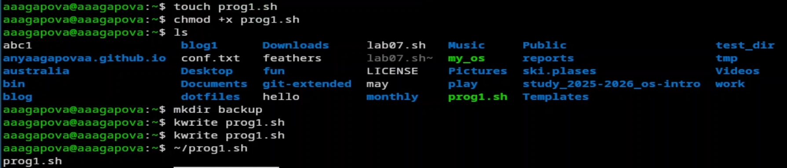
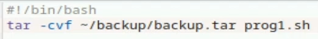
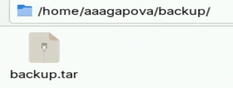
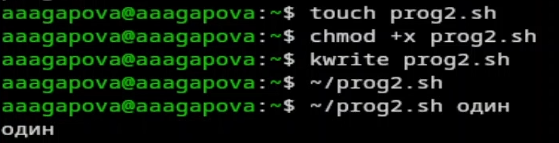
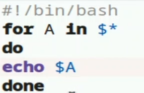
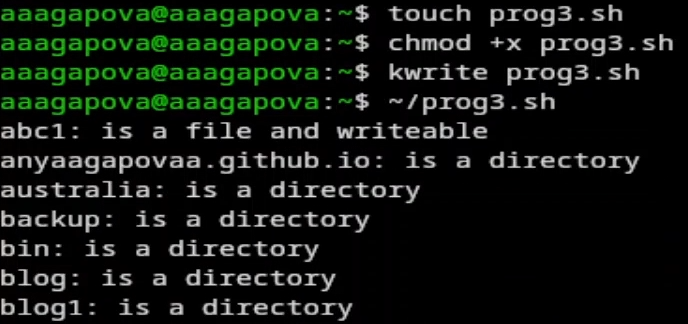
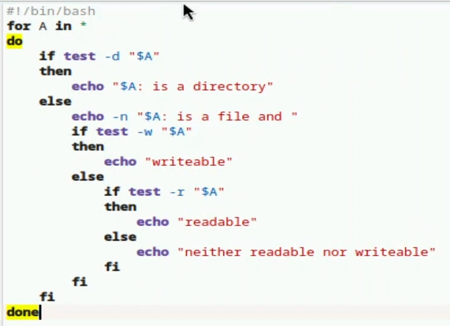
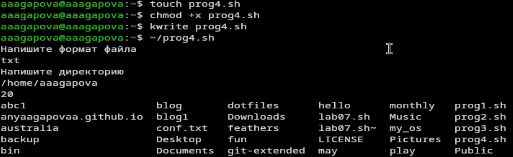
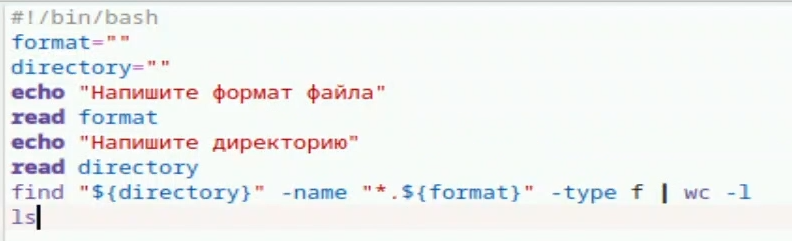

Российский университет дружбы народов им. П. Лумумбы
Цель работы
Изучить основы программирования в оболочке ОС UNIX/Linux. Научиться
писать небольшие командные файлы.
Задание
Написать скрипт, который при запуске будет делать резервную копию
самого себя (то есть файла, в котором содержится его исходный код) в
другую директорию backup в вашем домашнем каталоге. При этом файл должен
архивироваться одним из ар- хиваторов на выбор zip, bzip2 или tar.
Способ использования команд архивации необходимо узнать, изучив
справку.
Написать пример командного файла, обрабатывающего любое произвольное
число аргументов командной строки, в том числе превышающее десять.
Например, скрипт может последовательно распечатывать значения всех
переданных аргументов.
Написать командный файл — аналог команды ls (без использования самой
этой ко- манды и команды dir). Требуется, чтобы он выдавал информацию о
нужном каталоге и выводил информацию о возможностях доступа к файлам
этого каталога.
Написать командный файл, который получает в качестве аргумента
командной строки формат файла (.txt, .doc, .jpg, .pdf и т.д.) и
вычисляет количество таких файлов в указанной директории. Путь к
директории также передаётся в виде аргумента ко- мандной строки.
Выполнение лабораторной
работы
Создаю файл, делаю его исполняемым, открываю файл в текстовом
редакторе, пишу в нем код и запускаю его.

Программа 1
Код программы 1.

Написание кода
Результат программы 1.

Результат
Создаю файл, делаю его исполняемым, открываю файл в текстовом
редакторе, пишу в нем код и запускаю его.

Программа 2
Код программы 2.

Написание кода
Создаю файл, делаю его исполняемым, открываю файл в текстовом
редакторе, пишу в нем код и запускаю его.

Программа 3
Код программы 3.

Написание кода
Создаю файл, делаю его исполняемым, открываю файл в текстовом
редакторе, пишу в нем код и запускаю его.

Программа 4
Код программы 3.

Выводы
Я изучила основы программирования в оболочке OC UNIX/Linux, научилась
писать небольшие командные файлы.